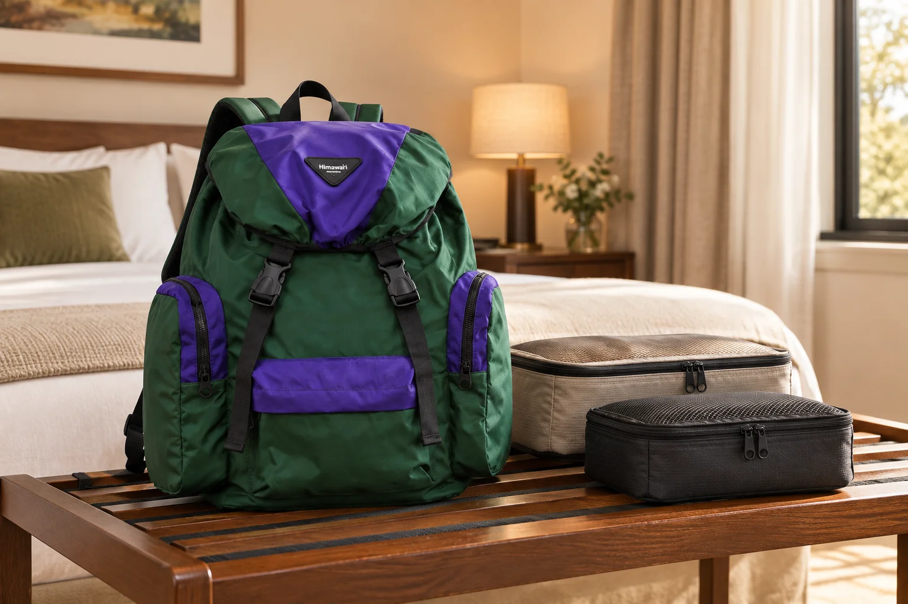

숙소에 도착한 백팩, 내일의 외출 가방으로 다시 꾸리기

집에서 출발할 때는 갈아입을 옷과 세면도구까지 모두 필요했습니다. 하지만 숙소에 도착한 뒤 저녁 식사를 하러 나갈 때도 같은 짐을 메고 갈 필요는 없습니다. 여행용 백팩 하나를 계속 사용하는 일정이라면 체크인 직후 잠깐의 재정리가 다음 외출을 편하게 만듭니다. 핵심은 짐을 덜어내는 것에서 끝내지 않고, 돌아와 다시 합칠 자리까지 정하는 것입니다.
침대 위에 쏟기 전에 놓을 자리를 정하세요
숙소에 들어오면 가방부터 열고 싶지만, 먼저 마른 선반이나 짐 받침대를 확인하세요. 바닥에서 묻은 먼지가 침구에 닿지 않도록 가방과 깨끗한 옷을 놓는 자리를 나눕니다. 작은 물건을 방 곳곳에 펼치면 나중에 회수하기 어려우므로, 꺼낸 물건은 한곳에 모아둡니다. 공용 공간을 쓰는 숙소라면 개인 짐을 보관할 수 있는 장소와 이용 안내부터 확인하세요. 가방을 비웠다는 이유로 소지품을 안전하게 보관한 것이 되지는 않습니다.
오늘 쓰지 않을 묶음을 통째로 덜어냅니다
갈아입을 옷, 숙소에서만 쓸 세면도구처럼 다음 외출에 필요 없는 묶음부터 꺼냅니다. 물건을 하나씩 분산시키기보다 기존 파우치나 정리 주머니 단위로 두면 다시 넣을 때 빠뜨리기 어렵습니다. 반대로 휴대전화, 지갑, 필요한 열쇠처럼 외출에 쓸 것은 가방 안의 익숙한 자리로 돌려놓습니다. 판단이 애매한 물건은 다음 방문 장소와 외출 시간을 기준으로 정하세요. 하루 종일 돌아다니는 날과 식사만 하고 돌아오는 날은 필요한 준비가 다릅니다.
가벼워진 뒤에는 내용물이 움직이는지 확인하세요
큰 짐을 빼면 어제 꽉 차 있던 백팩 안에 빈 공간이 생깁니다. 남은 작은 물건을 깊은 메인 공간에 흩어 두기보다 기존 포켓이나 닫힌 파우치로 묶어 위치를 정하세요. 출발 전 한 번 들어보고 단단한 물건이 한쪽으로 몰리지 않는지 살펴봅니다. 어깨끈도 평소처럼 메어 확인하되, 가방의 모양을 유지하려고 불필요한 물건을 다시 채울 필요는 없습니다. 수납량이 크게 달라진 날에는 어제 편했던 배치가 오늘도 편한지 직접 확인하는 편이 정확합니다.
방 열쇠와 귀가 후 정리 순서를 연결합니다
숙소 열쇠나 카드키를 처음 넣을 때 자리 하나를 정해두세요. 평소 쓰지 않는 물건이라 작은 포켓에 넣고 잊기 쉽습니다. 귀가하면 새로 생긴 영수증이나 포장재를 정리하고, 다음 날 이동할 예정이라면 숙소에 두었던 묶음을 다시 합칩니다. 충전 중인 기기나 욕실에 놓은 세면도구는 마지막까지 남기 쉬우므로 별도로 기억할 목록을 만들면 도움이 됩니다. 체크아웃 때는 빈 서랍과 콘센트 주변을 눈으로 확인하고 가방의 지퍼를 닫습니다.
No.1111처럼 여행 짐을 담는 백팩을 활용한다면
대표 사진은 그린·퍼플 배색의 Himawari No.1111을 참조한 숙소 정리 장면입니다. 사진 속 정리 주머니가 실제로 모두 들어간다는 의미는 아닙니다. 여행용 가방을 외출에도 계속 쓸 계획이라면 최대 수납량만 보지 말고 짐을 덜어낸 상태에서 필요한 물건을 찾기 쉬운지 살펴보세요. 숙소에 둘 짐을 나눌 수 없는 일정이라면 들고 나갈 총량을 기준으로 준비해야 합니다. 가방 하나로 이동과 외출을 잇는 요령은 매번 가득 채우는 대신 일정에 맞춰 내용을 바꾸는 데 있습니다.
참고·안내
- Himawari No.1111 제품 정보
- 실제 Himawari No.1111 제품 사진을 참조해 만든 AI 연출 이미지입니다. 주변 소품은 제품 구성에 포함되지 않으며 수납·성능 시험을 나타내지 않습니다.
자주 묻는 질문
숙소에 도착하면 짐을 전부 꺼내야 하나요?
전부 꺼낼 필요는 없습니다. 다음 외출에 필요 없는 묶음만 덜어내고, 다시 회수하기 쉬운 한곳에 보관하세요.
큰 백팩을 덜 채우면 작은 외출 가방처럼 사용할 수 있나요?
외형 크기 자체가 바뀌는 것은 아닙니다. 짐을 줄인 상태의 착용감과 방문 장소에서 허용하는 가방 크기를 함께 확인하세요.